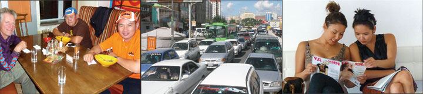
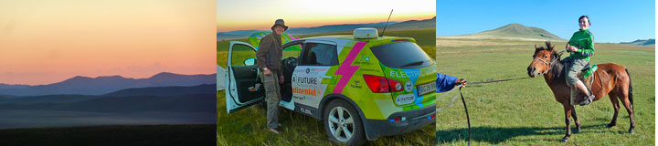
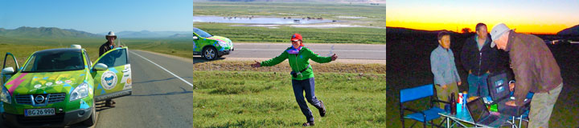
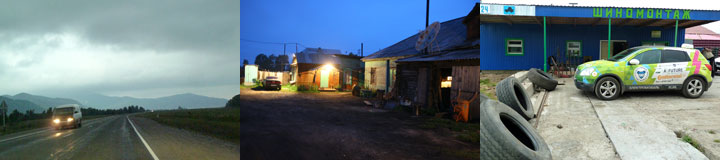
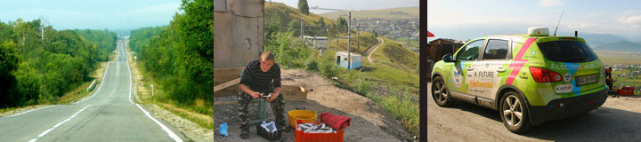
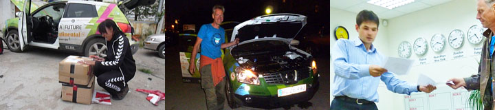
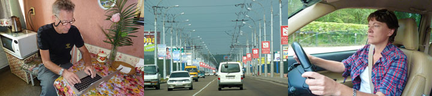
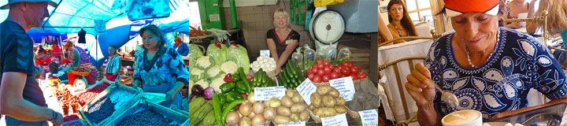
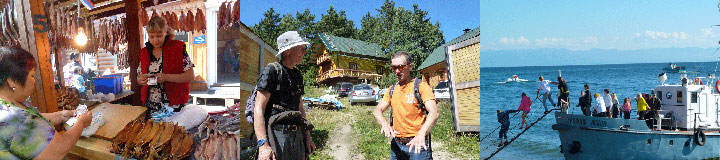
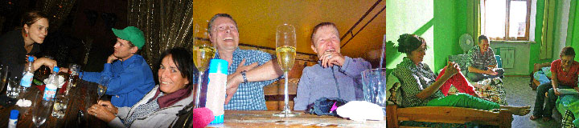

The electric car-team composed by Morten and (Second) Nina, Karen Elise, Hjalte and me gather at the morning table in Oasis Guesthouse in the outskirts of Ulan Bataar. We have things to do before setting off tomorrow. The quickest is to go to town by bus or taxi through the appalling traffic jam. Hjalte and I change our rubles, we see the world-famous giant dinosaurs fossil skeletons in the old Museum of Natural History and mail an important letter. With Nina we go to a store for Cashmere-wool and return home with three sweaters, a scarf and some socks. In the evening Hjalte and I are invited out for diner by Moto Mundo's Mongolian partners Sukhee and Gantulaga. They are Mongolia's best racing drivers, and some fine guys, friends for several years. "What you do is the future, Gantulaga says, and with your life-experience you will make it to the goal!"
Soeren Ekelund's electric-car construction works perfectly. But some parts made by various other companies have to be tougher. The cars have been subjected to extreme temperatures and brutal roads. The weak links in the chain have been mercilessly revealed. But the electric car construction are well designed, and that is why Soeren at any time has been able to figure out what was wrong, if we had a problem. Yesterday we had parked on the endless grassland with 0% power left. The generator was put to work, but went down all the time because Green Car took too much power. And when Hjalte adjusted the charger in the car it got too little power to start charging. We got an email through to Soeren and he replied at once with a trick to solve the problem, and now Green Car charges better than ever. We are ready for the Gobi desert!
Nina

We have left Russia and entered Mongolia with Green Car. We have done 8000 km from Estonia to Mongolia through Russia and it has taken us 50 days. Customs only took four hours - we had five cars in front of us. On the Mongolian side Claus and Karen Elise were waiting, having just arrived by bus from Ulan Ude. And then our good Mongolian friend and Moto Mundo-partner Sukhee turned up in his tall Land Cruiser. Sukhee is a great motor-man and winner two weeks ago of the tough international Mongolian Rally Mongolia (not to be confused with the touristic Mongolian Rally) in a Mitsubishi racing car. He led us to a wonderful river where we camped for the night. We pitched our tents as the grasshoppers and the generator sang and the day became a glowing line on the horizon. We are SO happy to have arrived in Mongolia.
Nina
Green Car was left without a power-outlet, so we said goodbye to the awful beds before sunrise. We ran out of power in a village, where a young girl in the tiny grocery shop did not dare let us use the rickety installations. Two more times were we shown away and when we at last did get some power for Green Car it was so weak it did not help much. We did not have the patience to wait the first place 14 hours to get Green Car fully charged, os we charged only a little here and there. Late at night we reached - Heavens know how - Ulan Ude in Buryatia. In a remote suburb we finally saw the Guesthouse and Green Car was down to 0% power. Claus and Karen was waiting for us with a warm cup of tea. The lesson of this story is it is bad to start the day in an electric car when it is not fully charged - it will make a miserable day.
Nina
Green Car wheeled well-charged up and down the steep hills towards the Baikal Lake. For lunch we bought bread and freshly smoked omul fish from the lake. At lunch-time Green Car had strong power in Sludyanka while we went for a long walk along the Balikal Lake and the Trans-Siberian railway. The air was fresh and crystal clear, the lake became blue sky in the distance, the shore so peaceful. We ended the day on a very rustic inn with rooms. Perhaps the same place we spent a night 22 years ago. Now it has bar with music-videos and a sauna with vodka-drinking Russians. The electric installations were so weak that Green Car had to stop charging not to burn down the whole ramshackle cafe to the ground.
Nina
Svetlana drove us to DHL, and they wrote ever more documents for the customs. While they worked on this she took us to the highest point in Irkutsk with a grand view of the river. Then, just before closing time, we got the parcel. We could not really believe it before we opened next the Green Car. With our joint efforts we got the new inverter mounted with high-voltage cables, water hoses and all. It got dark before we were finished. Happy and with a sigh of relief Soeren through the satellite could declare all wires connected correctly - as the car did not explode when Nina turned on the ignition! Home in Svetlana's flat Hjalte took power for the car from fourth floor down to Lenin-street.
We used the day to move the customs to give us our parcel with spare parts. They did not do this lightly. We got help from our energetic hostess Svetlana and she had experience with getting goods into Russia. No end to the documents this one parcel begets. A full technical manual, explaining what an inverter is has to be translated into Russian - by us! Svetlana helps again. You ought to force the customs officer to read it. And besides, the spare part is only in transit, as the rest of Green Car. Perhaps we will get the parcel tomorrow afternoon. We will celebrate it tonight with Svetlana and her husband Sasha. We bring out chocolate and a bottle of Russian champagne and have a long lovely evening in their kitchen.
The spare-part for Green Car has been in Irkutsk since Friday. At DHL Hjalte got an employee start the process to get our long-awaited goods released from customs. That done we took a street-car down to the central market. It was bursting with all kinds of food-stuffs, an impressive change from when we were here during communist-times. Then 22 years ago the fridges were all empty make-believe. Shops had paintings of food but nothing you could eat. You had to be a war-veteran to buy a piece of susage on your ration-card. To buy a bread you had to stand in a line. Now the vast hall is full of fresh fish, meat, dairy-products, berries and vegetables - all from around Irkutsk. Imported wine, cheese, tea and coffee are sold from rows of small kiosks. In central Irkutsk trendy cafes and restuarants line the streets. People are well dressed, everyone seems to be in a hurry to earn money and spend them.
Nina
Jack, the young owner of the back-packer hostel Baikaler invited me, Hjalte, Claus and Karen Elise to Listvyanka, the old village by the lake, now turning into a holiday-spot. He showed us around the two roomy ecological log-cabins he was building with solar heating and power generation. The Baikal lake was blue as the sky and big as an ocean. A lot of Sunday-relaxing Russians had taken their cars the 60 kms down to the lake from Irkutsk. Karen Elise and I took a dip in the clear icy water. Later we bought warm smoked Omul fish and cold beer, enjoying it greatly by the beach. In the evening we catched a bus back to Irkutsk, our heads full of sunshine and beauty.
Nina
Blue sky and glorious sunshine. Summer is back in Irkutsk. Claus and Karen Elise arrived by plane from Denmark and we had a walk down by the river with the old churches. Irkutskians enjoyed themselves, rollerblading, biking, kissing and fishing. We met with Anton and Martha and they told us about staying with railroad-workers at the Baikal-lake and couch-surfing in a crowded flat somewhere in the suburbs. In the evening we all six found a restaurant where Marx street crosses Lenin street. A sweet waitress in a kind of German dress served Russian champagne for us. We celebrated that we all met here - on the day we had planned.